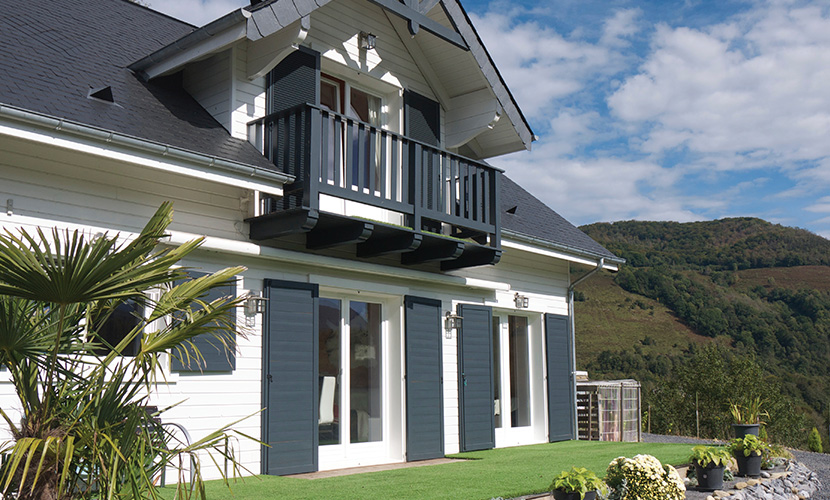
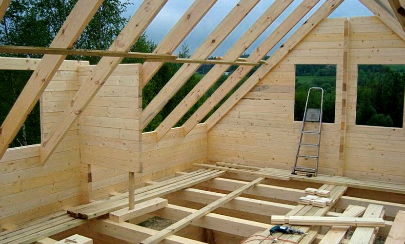
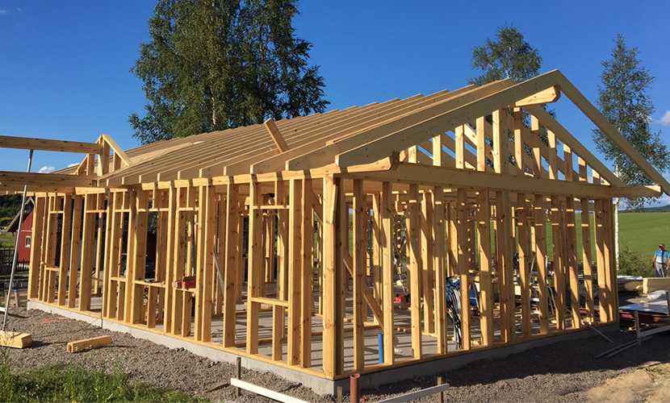

Firma EKO DOMY specjalizuje się głównie w produkcji domów z bala prefabrykowanego z dodatkową izolacją. Duże doświadczenie w budowie domów z drewna pozwoliło nam na zastosowanie rozwiązań technologicznych, które biorą pod uwagę specyfikę materiału budowlanego, jakim jest drewno. Dzięki użyciu najwyższej jakości materiałów, starannej obróbce, zastosowaniu nowoczesnych technologii i szerokiej wiedzy na temat specyfiki budownictwa drewnianego, jesteśmy w stanie zaoferować ekologiczne, zdrowe domy o wysokiej jakości i żywotności oraz z wysokimi parametrami energooszczędnymi.
Produkcja
Technologia domów firmy EKO DOMY opiera się na konstrukcji domu z bala o wybranej grubości, łączonego na pióro-wpust. Drewno używane do produkcji ścian jest zawsze starannie segregowane, suszone komorowo i czterostronnie strugane, aby zapewnić jak najwyższą jakość domu. Ściana domu drewnianego może powstać również z bala klejonego warstwowo, co dodatkowo zwiększa wytrzymałość drewna i ryzyko odkształceń.
Montaż
Nasze domy montowane są przez dwie ekipy wykwalifikowanych i doświadczonych cieśli. Dzięki zastosowaniu prefabrykacji, montaż domu drewnianego można porównać do składania klocków Lego. Wszystkie elementy są precyzyjnie obrobione i idealnie do siebie pasują. Ściany, strop i konstrukcja dachu mogą powstać już w przeciągu 4-5 dni, natomiast całkowity okres montażu zależy od wielkości domu.

Izolacja i instalacje
Pomiędzy główną konstrukcją domu, a wykończeniem wewnątrz znajduje się warstwa izolacyjna. Domy drewniane izolowane są wełną mineralną, która pozwala osiągnąć wysokie parametry termoizolacyjne nawet przy ścianach o niewielkiej grubości. Instalacje elektryczne, wodno-kanalizacyjne, czy gazowe prowadzone są wewnątrz ścian, dzięki czemu nie są widoczne po wykończeniu domu. Prace te są prowadzone równolegle z montażem domu. Ściany domu po przeprowadzeniu instalacji i ociepleniu wełną mineralną są wykańczane drewnianą deską obiciową lub płytą kartonowo-gipsową, według życzeń klienta.
Więźba dachowa
Więźba dachowa stosowana w naszych domach drewnianych jest prefabrykowana z najlepszej jakości drewna, dlatego najczęściej konstrukcja więźby jest widoczna wewnątrz domu. Jak całość konstrukcji domu, również projekt więźby dachowej powstaje w programie komputerowym, za pomocą którego nasi doświadczeni architekci wybierają rozwiązania konstrukcyjne, które najkorzystniej wpływają na wytrzymałość dachu oraz stabilność konstrukcji; szczególny nacisk kładziony jest na izolację cieplną i akustyczną. Więźba dachowa jest zaprojektowana i wykonana tak, aby można było zastosować każdy wybrany przez klienta materiał na pokrycie dachowe.
Domy szkieletowe
Nasza firma oferuje również możliwość wykonania domów w technologii szkieletowej. Budujemy domy szkieletowe z drewna z obustronnym obiciem deską obiciową. Każdy z przedstawionych w naszej ofercie domów z bali może również zostać wykonany w technologii szkieletowej.
